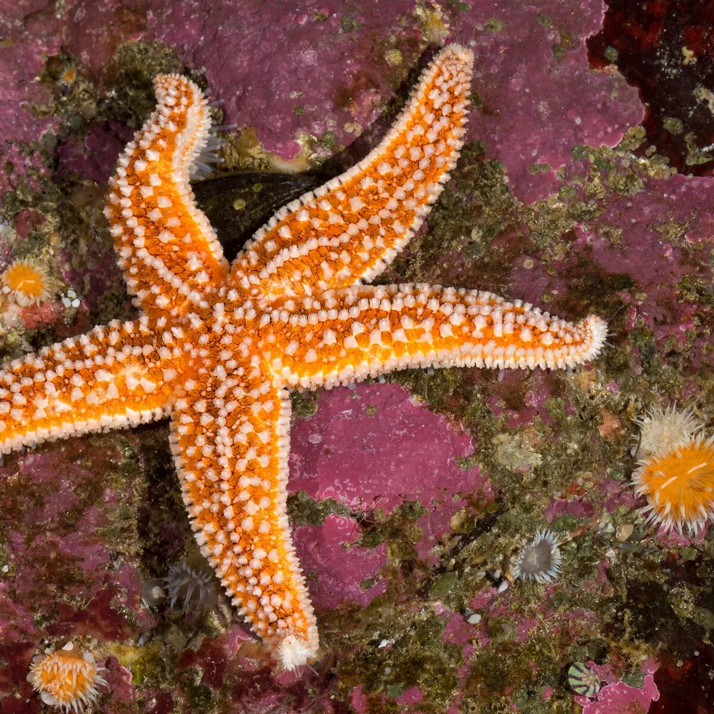

Las estrellas de mar atraviesan una pandemia y no se sabe cómo ayudarlas
By John Doe
La epidemia comenzó en 2013 y afectó a la estrella de mar ocre y al menos a otras 20 especies desde Baja California en México hasta el Golfo de Alaska. Pero este síndrome de desgaste de estrellas de mar también se ha observado...
Continuar leyendo
Los refugios térmicos para los arrecifes de coral están a punto de desaparecer
By John Doe
Un reciente análisis determina que solo queda el 0,2% de los refugios térmicos para los arrecifes de coral, por lo que, de no reducir los gases de efecto invernadero, los arrecifes no sobrevivirán al calentamiento global...
Continuar leyendo
Volcán submarino en el archipiélago de Tonga causa la mayor erupción del siglo XXI
By John Doe
El último viernes 14 de enero, el volcán Hunga Tonga-Hunga Ha’apai hizo erupción bajo el agua en el Océano Pacífico. Una columna de ceniza y gas se elevó a una altura de 20 kilómetros, y las estaciones meteorológicas registraron la onda expansiva...
Continuar leyendo
Hay un nuevo tipo de Aurora en la Tierra, y su nombre es Steve
By John Doe
«Cazadores de auroras» en el sur de Canadá que lo vieron por primera vez comenzaron a llamar a las misteriosas líneas «Steve» después de una broma en una película animada del 2006...
Continuar leyendo